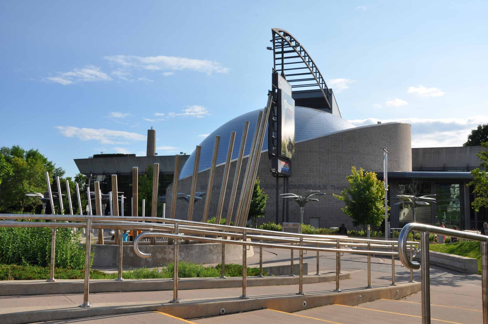

TORONTO
Diversity Our Strength

Toronto a city capital of the province of Ontario, southeastern Canada. It is the most populous city in Canada, a multicultural city, and the country’s financial and commercial centre. Its location on the northwestern shore of Lake Ontario,
which forms part of the border between Canada and the United States, and its access to Atlantic shipping via the St. Lawrence Seaway and to major U.S. industrial centres via the Great Lakes have enabled Toronto to become an important international
trading centre. Moreover, the city is positioned on the edge of some of the best farmland in Canada, with a climate favourable to growing a wide range of crops, thereby making Toronto a transportation, distribution, and manufacturing centre.
Most importantly, its central location, along with a host of political policies favouring international trade, places this city with the greatest economic ties to, and influence from, the United States. Since the second half of the 20th
century the city has grown phenomenally, from a rather sedate provincial town—“Toronto the Good”—to a lively, thriving, cosmopolitan metropolitan area.

History of Toronto
Early settlement
Prior to the arrival of Europeans, a number of First Nations peoples inhabited the site of the present city of Toronto and the surrounding regions. Their seminomadic settlement patterns included using the Toronto Passage—a portage from the mouth of the
Humber River to Georgian Bay—as a trade route. Traditional conflicts had existed between some First Nations peoples, but when the first Europeans arrived, the dynamics of relationships changed, in some instances greatly. The complex relationships
that developed were shaped not only by competition between the European colonizers but also by the introduction of firearms and diseases such as smallpox. The French, who initially claimed this territory and realized its potential as a fur
trade empire, aligned themselves with the Huron First Nations and sided with them in their traditional conflict with the Iroquois to the south. The Iroquois, in turn, formed an alliance with the British, who wanted to take possession of the
French colonies, and the fur trade, in North America. The Toronto region was in British North America after the founding of the United States during the American Revolution, after which several thousand United Empire Loyalists resettled in
southern Ontario.
Evolution of the modern city
Canada’s shift from British colonial status to independent nation-state resulted in Toronto being named as the capital of the province of Ontario, adding administrative and public service employment to the already diverse range of industrial occupations.
Railway developments to western Canada in the 1880s and, by the early 1900s, to northern Ontario and Quebec allowed Toronto to expand its manufacturing and service market. The Great Depression of the 1930s reversed the employment trend, with
approximately one-fourth of the Toronto population unemployed, and caused severe financial problems for suburban Toronto. Capital debt payments could not be met, and expenditure on public services—sewage and piped water supply in places remote
from the lake, for example—had to be postponed. However, World War II’s demands for war supplies, and soldiers, soon changed the employment picture. Following the war, and into the 1960s, times were prosperous throughout North America, and
Toronto’s economy diversified and boomed, greatly altering the cultural and spatial pattern of the city.
A major increase in the population of Toronto (nearly fourfold expansion, from 1.3 million in 1951 to over 5 million by 2006) and national economic growth influenced the city skyline, which is dominated by the CN Tower (a communications and observation
spire 1,815 feet [553 metres] high) as well as by the First Canadian Place (Bank of Montreal), Scotia Plaza, Canada Trust Tower, Manulife Centre, Commerce Court, Toronto-Dominion Centre, and Bay Adelaide Centre, each of which is more than
50 stories high. Other prominent buildings include City Hall (1965), Eaton Centre (a large indoor shopping complex), the gilded Royal Bank Plaza, the Toronto Reference Library, the Ontario Science Centre, the Royal Ontario Museum, with its
crystal-shaped facade, and Roy Thomson Hall, noted for its excellent acoustics. The city also features an extensive system of underground tunnels and concourses lined with shops, restaurants, and theatres. Through the construction of new housing
and mixed-use projects, together with the restoration and rehabilitation of heritage buildings, an extraordinary vitality has been brought to the urban core.